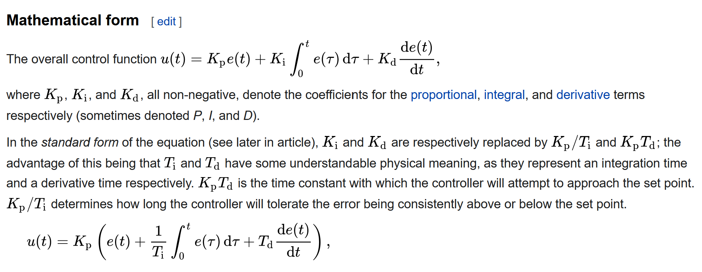
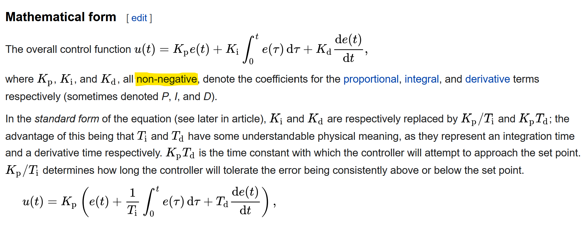
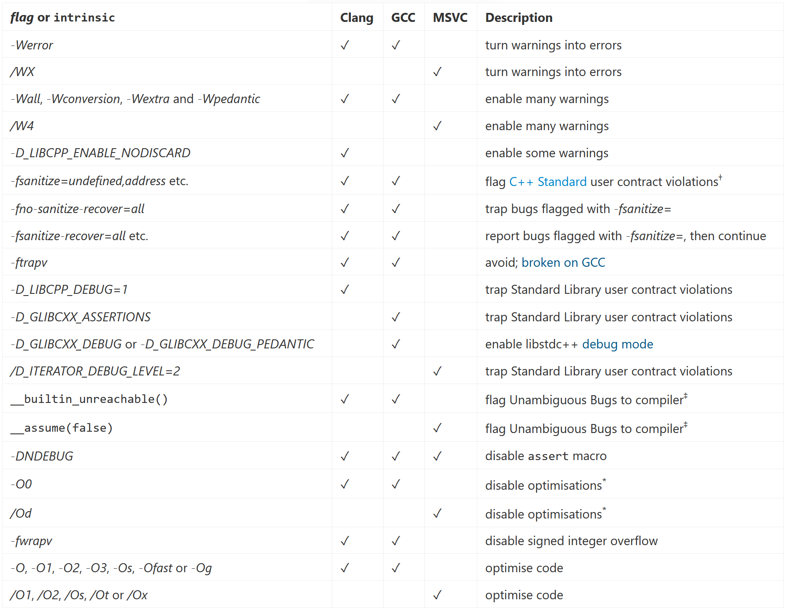
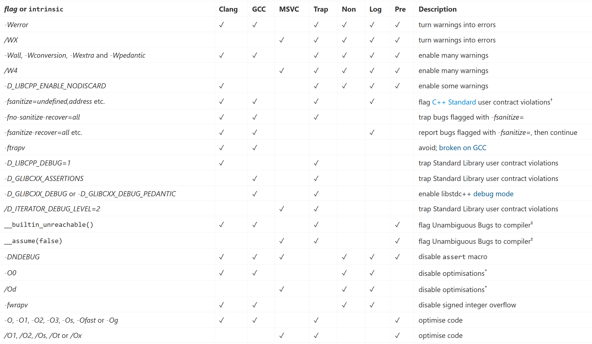
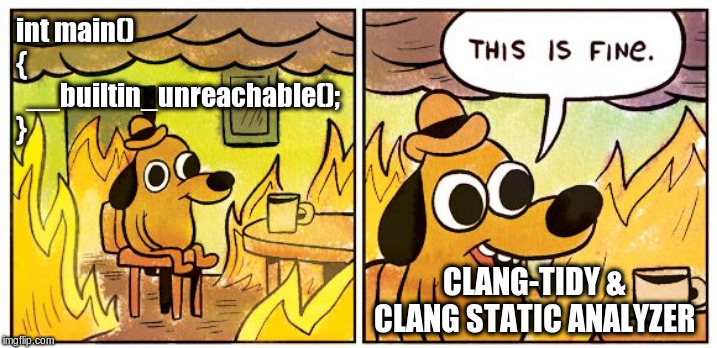

About Me
John McFarlane
Software Engineer, Jaguar Land Rover, Shannon, Co Clare, Ireland
 github.com/johnmcfarlane/accu-2022-examples
github.com/johnmcfarlane/accu-2022-examples

johnmcfarlane.github.io/accu-2022
Background
Work: games, servers, automotive
Fun: numerics, workflow, word games
C++: low latency, numerics, contracts
Definitions
Contracts
Contract Programming in C++(20)
Alisdair Meredith, CppCon 2018
A contract is an exchange of promises between a client and a provider.
Disappointment
P0157R0: Handling Disappointment in C++
Lawrence Crowl, 2015
When a function fails to do what we want, we are disappointed. How do we report that disappointment to callers? How do we handle that disappointment in the caller?
Bugs and Errors
P0709R2: Zero-overhead deterministic exceptions: Throwing values
Herb Sutter, 2018
Programming bugs (e.g., out-of-bounds access, null dereference) and abstract machine corruption (e.g., stack overflow) cause a corrupted state that cannot be recovered from programmatically, and so they should never be reported to the calling code as errors that code could somehow handle.
Contracts
Contracts
Types
- C++ API Contracts
- C++ Standard
- End User Contract
- Test User Contract
Attributes
- Agreement
- Client
- Provider
- (Client) Violation
Contract Attributes
| C++ API | standard | end user | test user | |
|---|---|---|---|---|
| agreement | docs | ISO/IEC 14882 | docs | docs |
| client | dev | dev | user | dev |
| provider | dev | implementer | dev | implementer |
| violation | bug | bug | error | error |
Contract Attributes
| C++ API | standard | end user | test user | |
|---|---|---|---|---|
| agreement | docs | ISO/IEC 14882 | docs | docs |
| client | dev | dev | user | dev |
| provider | dev | implementer | dev | implementer |
| violation | bug | bug | error | error |
Contract Attributes
| C++ API | standard | end user | test user | |
|---|---|---|---|---|
| agreement | docs | ISO/IEC 14882 | docs | docs |
| client | dev | dev | user | dev |
| provider | dev | implementer | dev | implementer |
| violation | bug | bug | error | error |
Contract Attributes
| C++ API | standard | end user | test user | |
|---|---|---|---|---|
| agreement | docs | ISO/IEC 14882 | docs | docs |
| client | dev | dev | user | dev |
| provider | dev | implementer | dev | implementer |
| violation | bug | bug | error | error |
Contract Attributes
| C++ API | standard | end user | test user | |
|---|---|---|---|---|
| agreement | docs | ISO/IEC 14882 | docs | docs |
| client | dev | dev | user | dev |
| provider | dev | implementer | dev | implementer |
| violation | bug | bug | error | error |
Contract Attributes
| C++ API | standard | end user | test user | |
|---|---|---|---|---|
| agreement | docs | ISO/IEC 14882 | docs | docs |
| client | dev | dev | user | dev |
| provider | dev | implementer | dev | implementer |
| violation | bug | bug | error | error |
End User Contract
End User Contract
- The exchange of promises between the user and developer of a software product.
- It's expected that the user may violate the contract.
- All people make mistakes.
- Some people are naughty!
- Such violations are errors.
- Errors should be handled by the program.
Errors
- are imperfections modelled within the system
- arise from real-world unpredictability/unreliability
- are caused by real-world phenomena (such as humans)
- Input is a major source of errors:
- command line, network traffic, files, input devices.
- are introduced through interfaces with the real world, e.g.:
std::filesystemandstd::stringare UI elements!std::chronomodels the real world and similarly 'messy'.
xkcd.com/435

Errors are things that can go wrong
- even in perfect programs.
Examples of Errors
resource
- missing/read-only file
- missing hardware device
- network address already in used
- (Generally API errors you weren't expecting (unless you read the docs (which you didn't.)))
ill-formed input
- file too short
- file doesn't conform to format, e.g. JSON
- parameter is out of range
- unexpected device type
- unexpected network packet size
Error Handling
- Recap: client violations of the End User Contract should be handled by the program
- The user needs to know about them in order to decide what to do next.
- The software must inform the user to this end.
- Be considerate!
$1,000,000 Question
How does your program handle errors?
$1,000,000 Answer
It depends.
It depends on the program
- Is your program batch or steady-state?
- Does your program have realtime constraints?
- Does your program respond through:
- a console,
- a GUI,
- a RESTful API,
- something else, or
- nothing at all?
- Is your program even a program, or reusable library?
Choices, choices!
C++ has too many error-handling facilities.
But part of the problem is its versatility.
An important consideration is to allow for versatility.
If you're lucky
namespace acme {
// everything needed for program to do its thing;
// well-formed and error-free
struct sanitized_input {
// ...
};
// safety boundary; untrusted input; trusted output
std::optional<sanitized_input> digest_input(std::span<char const* const> args);
// free from error handling
std::string do_the_thing(sanitized_input in);
}
int main(int argc, char const* const* argv)
{
// variable binding; type safety FTW!
auto const args{std::span{argv, argv+argc}};
auto const input{acme::digest_input(args)};
if (!input) {
return EXIT_FAILURE;
}
std::cout << acme::do_the_thing(*input);
return EXIT_SUCCESS;
}Some Techniques for Simple Programs
- Reporting:
- Log, e.g. print something helpful to `stderr`
- Control Flow (Sad Path):
- Exceptions
- Return values
- Abnormal program termination
Example 1: Print result, return success, log details
// print file's size or return false
auto print_file_size(char const* filename)
{
std::ifstream in(filename, std::ios::binary | std::ios::ate);
if (!in) {
std::cerr << std::format("failed to open file \"{}\"\n", filename);
return false;
}
std::cout << std::format("{}\n", in.tellg());
return true;
}
auto print_config_file_size()
{
if (!print_file_size("default.cfg")) {
// in this function, we know the nature of the file
std::cerr << "failed to print the size of the config file\n";
}
}
Example 2: Return result, ??? success, log details
// return file's size
auto file_size(char const* filename)
{
std::ifstream in(filename, std::ios::binary | std::ios::ate);
if (!in) {
std::cerr << std::format("failed to open file \"{}\"\n", filename);
// how is the disappointment returned now?
}
return in.tellg();
}
Example 3: Return result or failure, log details
auto file_size(char const* filename)
-> std::optional<std::ifstream::pos_type>
{
std::ifstream in(filename, std::ios::binary | std::ios::ate);
if (!in) {
std::cerr << std::format("failed to open file \"{}\"\n", filename);
return std::nullopt;
}
return in.tellg();
}
Example 4: Return result, abort on failure, log details
// error handler function
template <typename... args>
[[noreturn]] void fatal(args&&... parameters)
{
std::cerr << std::format(std::forward<args>(parameters)...);
std::abort();
}
int main(int argc, char* argv[])
{
auto const expected_num_params{3};
if (argc != expected_num_params) {
fatal(
"Wrong number of arguments provided. Expected={}; Actual={}\n",
expected_num_params, argc);
return EXIT_FAILURE;
}
}
Functions Are a Track Event
There are zero or more obstacles and one finish line.
auto do_something(auto param)
{
// hurdle 1
auto intermediate_thing1 = get_a_thing(param)
if (!intermediate_thing1) {
return failure;
}
// hurdle 2
auto intermediate_thing2 = get_another_thing(intermediate_thing1)
if (!intermediate_thing2) {
return failure;
}
// finish line
return intermediate_thing2;
}
Exceptions
- Pros:
- versatile/scalable
- very efficient normal path
- hide control flow
- Cons:
- exceedingly slow in exceptional path
- not always optimal in normal path
- hide control flow
Contract Attributes
| C++ API | standard | end user | test user | |
|---|---|---|---|---|
| agreement | docs | ISO/IEC 14882 | docs | docs |
| client | dev | dev | user | dev |
| provider | dev | implementer | dev | implementer |
| violation | bug | bug | error | error |
Contract Attributes
| C++ API | standard | end user | test user | |
|---|---|---|---|---|
| agreement | docs | ISO/IEC 14882 | docs | docs |
| client | dev | dev | user | dev |
| provider | dev | implementer | dev | implementer |
| violation | bug | bug | error | error |
C++ API Contracts
C++ API Contracts
- The exchange of promises between the developer(s) using and implementing a C++ API.
- Violations are bugs.
- Fixing bugs is as important as fixing compiler errors.
Bugs
A program with a bug:
- is incorrect
- contains undefined behaviour
- is vulnerable
- violates the End User Contract.
xkcd.com/435
Example of Client C++ API Contract Violation #1
PID Controller
Example Bug: PID Controller
Kp=.1, Ki=.5, Kd=.01, setpoint=10, pv=30

Kp=-.1, Ki=.5, Kd=.01, setpoint=10, pv=30
Contract from PID
en.wikipedia.org/wiki/PID_controller#Mathematical_form
Contract from PID
en.wikipedia.org/wiki/PID_controller#Mathematical_form
PID Controller (interface)
namespace pid {
struct components {
double proportional;
double integral;
double derivative;
};
// values kept constant throughout operation of a controller
struct parameters {
// non-negative factors used to generate PID terms
components k;
double dt;
};
struct state {
double integral;
double error;
};
struct input {
// desired value
double setpoint;
// actual value
double process_variable;
};
struct result {
// corrective value to apply to system
double correction;
// to pass in to next iteration as input::previous state
state current;
};
[[nodiscard]] auto calculate(parameters params, state previous, input in)
-> result;
}PID Controller (implementation)
#include "pid.h"
#include "pid_assert.h"
[[nodiscard]] auto pid::calculate(parameters params, state previous, input in)
-> result
{
PID_ASSERT(params.k.proportional >= 0);
PID_ASSERT(params.k.integral >= 0);
PID_ASSERT(params.k.derivative >= 0);
PID_ASSERT(params.dt > 0);
auto const error = in.setpoint - in.process_variable;
auto const next_integral{previous.integral + error * params.dt};
auto const derivative = (error - previous.error) / params.dt;
auto const terms{components{
.proportional = params.k.proportional * error,
.integral = params.k.integral * next_integral,
.derivative = params.k.derivative * derivative}};
auto const output = terms.proportional + terms.integral + terms.derivative;
return result{
output,
state{next_integral, error}};
}Example of Client C++ API Contract Violation #2
(Anecdotal) UID vs Bitmap
typedef uid = std::uint32_t;
constexpr auto invalid_id{uid{-1}};
...
class bitset {
public:
bool get(std::size_t index) const {
if (index <= capacity()) {
resize(index);
}
...
}
...
};UID vs Bitmap
Observations
- Sentinel values, e.g.
invalid_id, are trouble! - Defensive or helpful code is unwelcome complexity.
- Trap bugs as they hatch.
Contract Attributes
| C++ API | standard | end user | test user | |
|---|---|---|---|---|
| agreement | docs | ISO/IEC 14882 | docs | docs |
| client | dev | dev | user | dev |
| provider | dev | implementer | dev | implementer |
| violation | bug | bug | error | error |
Contract Attributes
| C++ API | standard | end user | test user | |
|---|---|---|---|---|
| agreement | docs | ISO/IEC 14882 | docs | docs |
| client | dev | dev | user | dev |
| provider | dev | implementer | dev | implementer |
| violation | bug | bug | error | error |
C++ Standard
C++ Standard as a Contract
- The exchange of promises between C++ developers and C++ implementers.
- The authors of the contract are WG21 - not necessarily the providers.
- Client violations are bugs.
- As with C++ API Contracts, violation is UB.
More Bugs!
Prominent C++ Standard contract violation bugs fall into two main categories
integer arithmetic
- divide-by-zero
- overflow
object lifetime
- null pointer dereference
- dangling pointer dereference (use after free)
- out-of-bounds sequence lookup (e.g. buffer overflow)
- double-deletion
leaks
Arithmetic Example 1: Divide by Zero
int main()
{
return 1/0;
}Tools to the Rescue!
Shift Left
- Preventing bugs in users' programs is essential.
- Intercept them as early as possible.
- Bug-hostile APIs, languages and tools make the bug inconceivable.
- Compilers, linters and static analysers can flag potential bugs.
- Instrumentation detects bugs in executing code.
- Automated testing exercises the code.
- Fuzz testing and coverage metrics guide testing.
Some Useful Flags
Testing with Sanitizers is Left of Bug Reports
int main()
{
auto v{std::vector{0, 1}};
v.push_back(2);
fmt::print("{}\n", v[3]);
}libstdc++: -D_GLIBCXX_ASSERTIONS
MSVC: /D_ITERATOR_DEBUG_LEVEL=1?
A Funny Thing Happened on the Way to the Repository
// from https://discourse.cmake.org/t/tests-that-are-meant-to-abort/537/4
// This is a hack to implement death tests in CTest.
extern "C" void error_test_handle_abort(int /*unused*/)
{
std::exit(EXIT_FAILURE); // NOLINT(concurrency-mt-unsafe)
}
int main()
{
if (std::signal(SIGABRT, error_test_handle_abort) == SIG_ERR) {
std::abort();
}
auto v{std::vector{0, 1}};
v.push_back(2);
fmt::print("{}\n", v[3]);
}death tests are hard
Contract Attributes
| C++ API | standard | end user | test user | |
|---|---|---|---|---|
| agreement | docs | ISO/IEC 14882 | docs | docs |
| client | dev | dev | user | dev |
| provider | dev | implementer | dev | implementer |
| violation | bug | bug | error | error |
Contract Attributes
| C++ API | standard | end user | test user | |
|---|---|---|---|---|
| agreement | docs | ISO/IEC 14882 | docs | docs |
| client | dev | dev | user | dev |
| provider | dev | implementer | dev | implementer |
| violation | bug | bug | error | error |
Test User Contract
Contract Attributes
| C++ API | standard | end user | test user | |
|---|---|---|---|---|
| agreement | docs | ISO/IEC 14882 | docs | docs |
| client | dev | dev | user | dev |
| provider | dev | implementer | dev | implementer |
| violation | bug | bug | error | error |
The Test User Contract
- The exchange of promises between C++ developers and C++ tools providers.
- Provision is considered a nice-to-have, a 'quality of implementation' issue`.
- Client violations are
bugserrors. - These errors arise at the point where a bug is discovered.
- The user is a dev in need of feedback about correctness.
- One such tool is a good
assert.
Trigger Warning: This Assertion Triggers UB!
// For testing coverage, assertions are not necessarily a concern.
#if defined(PID_DISABLE_ASSERTS)
#define PID_ASSERT(cond)
// In debug builds, fail fast and loud when an assertion is challenged.
#elif !defined(NDEBUG)
#define PID_ASSERT(cond) ((cond) ? static_cast<void>(0) : std::terminate())
// In optimised GCC builds, optimise/sanitize accordingly.
#elif defined(__GNUC__)
// NOLINTNEXTLINE(cppcoreguidelines-macro-usage)
#define PID_ASSERT(cond) ((cond) ? static_cast<void>(0) : __builtin_unreachable())
// In optimised MSVC builds, optimise/sanitize accordingly.
#elif defined(_MSC_VER)
#define PID_ASSERT(cond) __assume(cond)
// In other optimised builds assume code is correct.
#else
#define PID_ASSERT(cond)
#endif
Simplicity, Uniformity, Versatility
- The choice of how to handle bugs lies in the hands of the developer using the code.
- Most UB ('good' UB?) is evidence of bugs.
- All bugs stink.
- If you are unsure about correctness (which you should be) you are taking a risk by releasing your product to the client.
- If you are unsure about correctness (which you should be) you are taking a risk by enabling optimisations.
- The distinction between 'user bugs', 'language UB', 'hard UB', 'time travel UB' etc. is false.
Bugs is Bugs
// precondition: number is in range [1..26]
constexpr auto number_to_letter(int number)
{
return char(number - 1 + 'A');
}
// signed integer overflow violates C++ Standard, is already UB
number_to_letter(0x7fffffff);Contracts Protect Interests
constexpr auto number_to_letter(int number)
{
constexpr auto lookup_table = "ABCDEFGHIJKLMNOPQRSTUVWXYZ";
return lookup_table[number - 1];
}
// signed integer overflow violates C++ Standard, is already UB
number_to_letter(0x7fffffff);Strategies
- Trap Enforcement Strategy - Bugs are Fatal
- Non-enforcement Strategy - Struggle on
- Log-And-Continue Strategy - Bugs happens
- Prevention Enforcement Strategy - Bugs, what bugs?
Some Useful Flags, Again
Don't Optimise Until You Sanitize!
- Test your code before you release it.
- Make sure it's all tested (coverage).
- Make sure it's all really tested (fuzzing).
- Get your 9's.
Testing Isn't Debugging
.github/workflows/toolchains/linux-gcc.cmake
set(CMAKE_CXX_FLAGS_INIT
"-Wall -Werror -Wextra -Wno-maybe-uninitialized -Wno-restrict -pedantic")
set(CMAKE_CXX_FLAGS_COVERAGE_INIT
"-coverage -fno-exceptions -DPID_DISABLE_ASSERTS")
set(CMAKE_CXX_FLAGS_TEST_INIT
"-D_GLIBCXX_ASSERTIONS -DNDEBUG -O3 -fsanitize=address,undefined -fno-sanitize-recover=all")Testing Isn't Debugging
.github/workflows/toolchains/linux-gcc.cmake
#!/usr/bin/env bash
set -euo pipefail
PROJECT_DIR=$(cd "$(dirname "$0")"/../../..; pwd)
conan install \
--build=missing \
--env CONAN_CMAKE_TOOLCHAIN_FILE="${PROJECT_DIR}/.github/workflows/toolchains/linux-gcc.cmake" \
--settings build_type=Test \
"${PROJECT_DIR}" \
"$@"
conan build \
"${PROJECT_DIR}"
Discussion
Mars Code, Gerard J. Holzmann, 2014
- Mars Science Laboratory, written in C
- four static analysers run nightly
- used dynamic thread analysis tool
- warnings enabled and enforced in compiler
- all mission-critical code
- had to be 2% assertions
- had to remain enabled after testing
A failing assertion is now tied in with the fault-protection system and by default places the spacecraft into a predefined safe state where the cause of the failure can be diagnosed carefully before normal operation is resumed.
Clang-Tidy Avoids Unreachable Paths
"Doesn't look like anything to me"
Thank You
John McFarlane
Jaguar Land Rover, Shannon, Ireland
github.com/johnmcfarlane/accu-2022-examples
johnmcfarlane.github.io/slides/2022-accu
The Stuff I Didn't Get To
Naming
- Names matter to contracts
- If the meaning of an element changes, consider changing the name
Bug or Error?
int f(int const* p, int a, int b)
{
// Are we good?
int r = 0;
for (int i = a; i <= b; i ++)
{
r += p[i];
}
return r;
}
int g(int const* p)
{
// Is this OK?
return f(p, -1, 1);
}maybe a bug, maybe not
Bug?
int accumulate(int const* numbers, int first, int last)
{
// Are we good?
int r = 0;
for (int i = first; i <= last; i ++)
{
r += numbers[i];
}
return r;
}
int g(int const* p)
{
// Is this OK?
return accumulate(p, -1, 1);
}it's a bug!
Bug!
int accumulate(int const* numbers, int first, int last)
{
assert(first >= 0);
int r = 0;
for (int i = first; i <= last; i ++)
{
r += numbers[i];
}
return r;
}
int g(int const* p)
{
// Bug: -1 isn't in sequence that starts with p
return accumulate(p, -1, 1);
}but...
Bug?
int sample(int const* center, int first, int last)
{
// Are we good?
int r = 0;
for (int i = first; i <= last; i ++)
{
r += center[i];
}
return r;
}
int g(int const* p)
{
// Is this OK?
return sample(p, -1, 1);
}what about now?
No Bug!
int sample(int const* center, int first, int last)
{
// First might be anything.
int r = 0;
for (int i = first; i <= last; i ++)
{
r += center[i];
}
return r;
}
int g(int const* p)
{
// center is not necessarily the start of the sequence.
return sample(p, -1, 1);
}Naming
- Problem:
- Two functions use the same algorithm
- But they have different contracts
- How do you test different contracts from the same function?
- Solution:
- Different functions?
Naming
int accumulate_neighborhood(int const* position, int offset_first, int offset_last)
{
int r = 0;
for (int i = offset_first; i <= offset_last; i ++)
{
r += position[i];
}
return r;
}
int sample(int const* center, int first, int last)
{
return accumulate_neighborhood(center, first, last);
}
int accumulate_subrange(int const* numbers, int first, int last)
{
assert(first >= 0);
return accumulate_neighborhood(numbers, first, last);
}what about now?
Surgery is Now Open
- Q: My project doesn't use analysis tools or modern, quality toolchains.
- A: Sorry about that. Consider running tests against nice tools.
Surgery is Now Open
- Q: A million things would break if I enabled checks.
- A: Disable checks and exclude all files. Then slowly fix things one check/file at a time until all the checks you want are applied to all files.
Surgery is Now Open
- Q: My project doesn't test the code.
- A: You're problems are beyond the specialty of this doctor.
Surgery is Now Open
- Q: My dependencies trigger warnings/errors
- A: Think about the contract between you and your dependency provider; try
-isystem.
Surgery is Now Open
- Q: This stuff gets hard in big, old projects maintained by big, young teams
- A: Agreed. There is no silver bullet.
Surgery is Now Open
- Q: My project doesn't need to be safe/secure. I don't need to worry about this stuff, right?
- A: ...
On Correctness
- Correctness is a consequence of generally-good practices:
- using modern features (std::print, std::optional, std::vector, owning pointers)
- testing code
- using tools
- healthy team dynamics (mentoring, pairing, reviewing)
- avoiding accidental complexity
On Correctness
- Correctness gives you
- quality - your software works better sooner
- productivity - less time wasted testing changes, debugging, fixing
- knowledge - tools teach you how to avoid mistakes
- safety & security guarantees
In Defence of Simplicity
- Keep all your software simple and correct, including:
- Functional (production) code
- Automated tests
- Documentation
- Build system
- Avoid control flow, especially
ifstatements - Don't over-engineer or write code you don't need (YAGNI)
Coding Standards
- Commit to modern practices and conventions, e.g.:
- C++ Core Guidelines
- Modern CMake
- Linux-flavour Git commit descriptions
- Enforce with tools, tools, tools!
Keep Your Friends Close; Keep Your Errors Closer
- Minimise distance (in space and time) between bug location (source code that needs fixing) and point of failure (crash, trap, unwanted behaviour)
- Being explicit and strict about C++ API Contracts helps this enormously
- Accordingly assertions help. Language feature will help too.